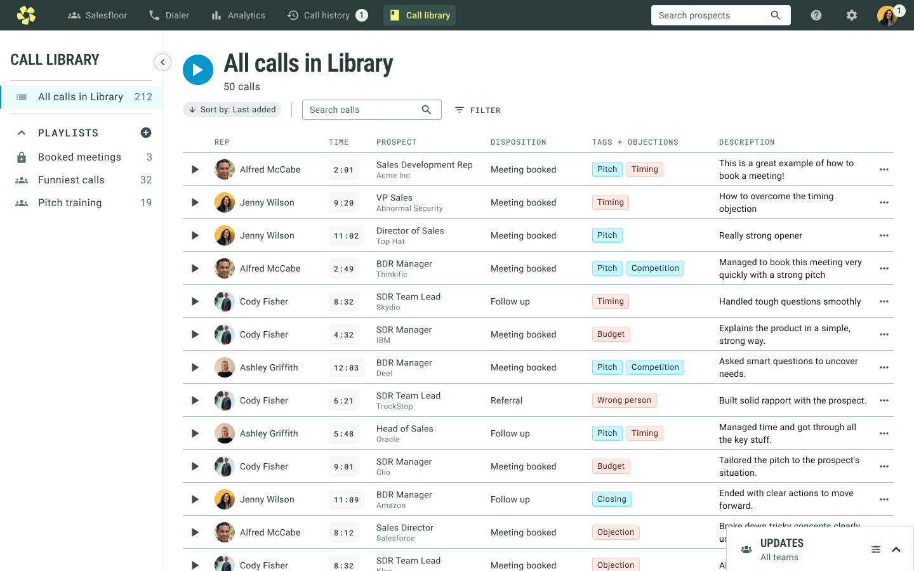
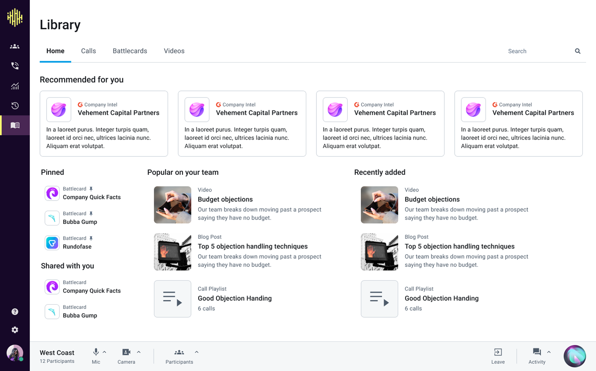
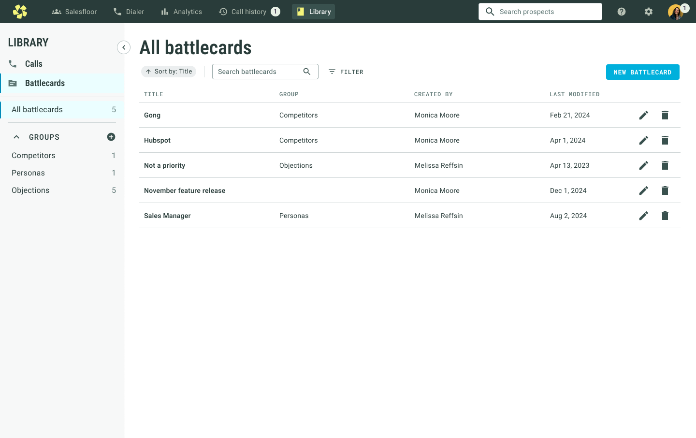
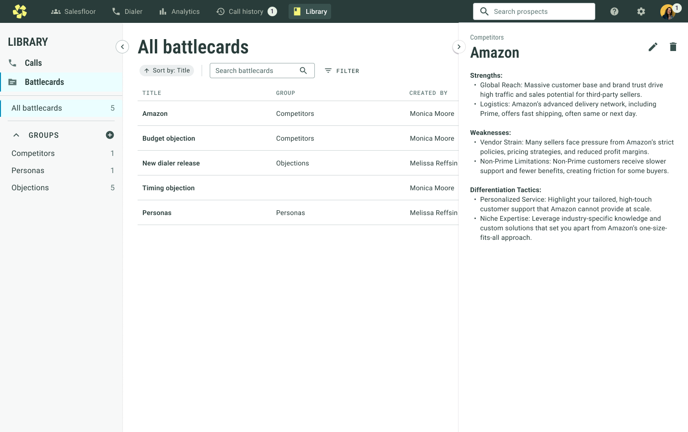
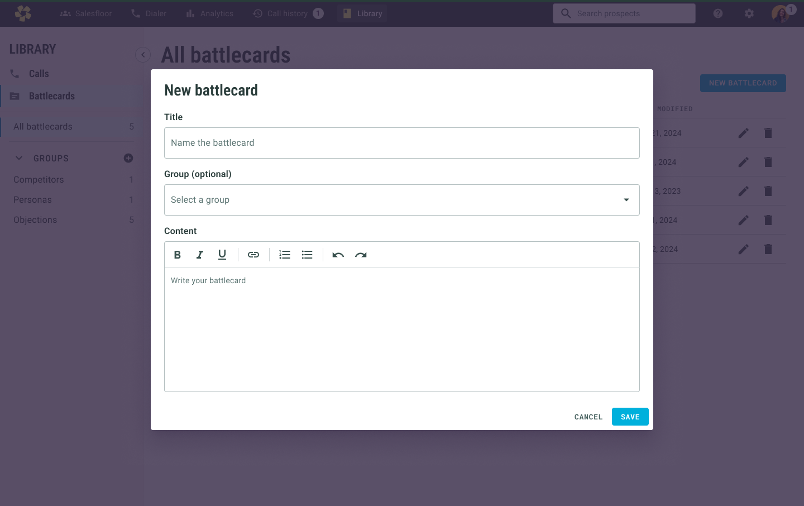
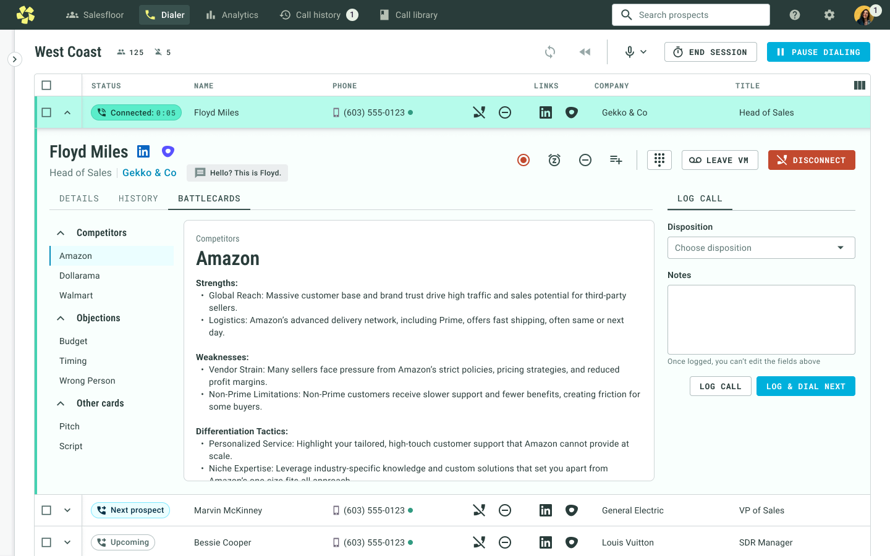
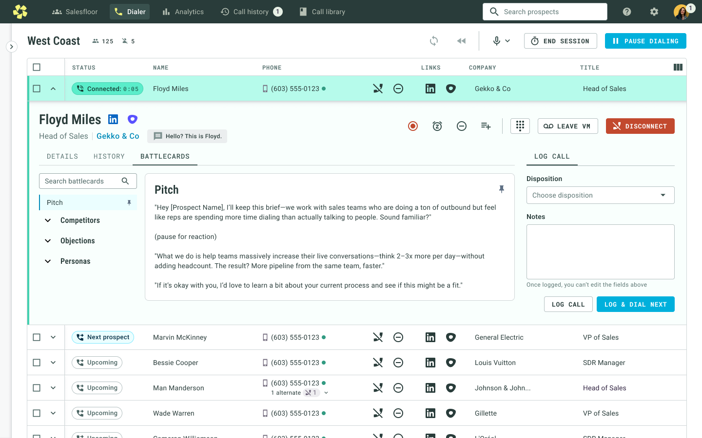
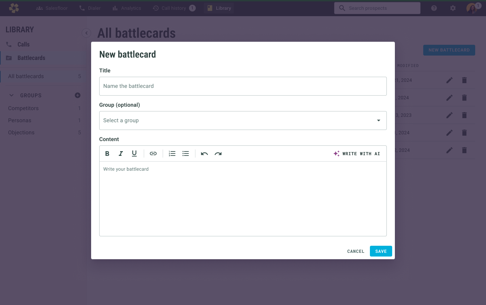
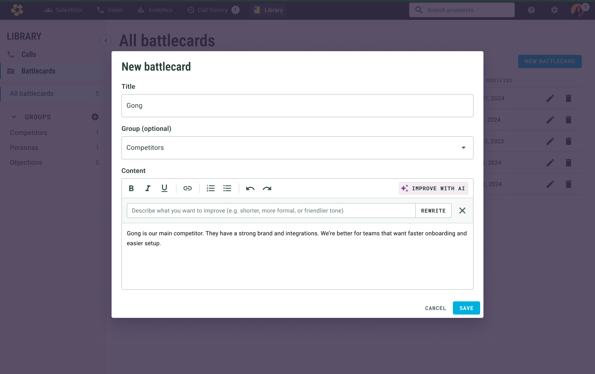
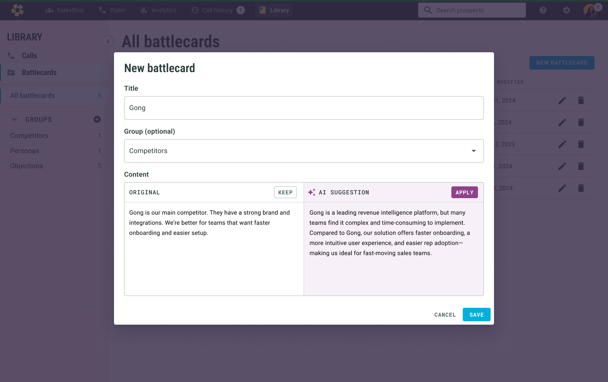

The team objective
One of Orum’s main goals was to help sales reps book more meetings. The automated dialer helped reps connect with more prospects, but we also wanted to help them perform better once a call connected — something that was largely driven by coaching from Sales Managers.
Managers were also key decision-makers in whether a team adopted and renewed Orum. Making Orum more useful for coaching and enablement could therefore improve the rep experience while making the product more valuable — and stickier — for the business.
Research showed an access problem
As part of a broader coaching initiative, I interviewed a dozen SDR managers to understand their role and how they supported their teams. Three responsibilities consistently emerged:
Battlecards were one of those enablement resources. Managers used them to help reps talk about competitors, handle objections, and follow scripts. The problem was that the cards typically lived in tools like Google Drive, away from the call itself.
One manager showed us around the office and reps literally had battlecards printed out and taped around their desks because digital versions were too difficult to pull up mid-call.
Battlecards were helpful, but underused because they were difficult to find and access during a call.
Bring battlecards into Orum, then use AI to make them easier to create and surface at the right moment.
A three-phase solution
Rather than treat this as one isolated feature, we approached the problem in stages. Each phase solved a different barrier to battlecard adoption.
Bring battlecards into Orum so managers can author and organize them and reps can access them without leaving the product.
Reduce the effort of creating useful battlecards by helping managers write and improve content with AI.
Make the right battlecard easier to use during a live conversation by having AI suggest relevant cards based on what is being said.
Phase 1 — bring battlecards into Orum
The most crucial problem we heard was that battlecards are living in other places, like Google Drive, and it would be much easier if they can live and be accessed within Orum.
Build on the Library rather than create another destination
We already had a Call Library where reps and managers could save calls for coaching. We also had a longer-term vision for that area to become a home for multiple types of sales resources.
I decided to keep that direction: rebrand Call Library as the broader Library and add Battlecards alongside Calls.


Make a growing set of cards easy to organize
Similar to Call Library, battlecards use a table for scanning. From research, grouping was critical: teams often have separate cards for competitors, personas, objections, and other sales situations.

Keep reading and authoring lightweight
Opening a battlecard uses a side panel, consistent with the Call Library pattern, so users can review the content without navigating away from the list.

When creating a card, managers can assign it to a group and use basic text-formatting tools. The first version deliberately kept authoring straightforward.

Bring battlecards into the dialer
The most important moment for a battlecard is while the rep is actually speaking to a prospect. I explored several layouts before landing on side navigation with the selected card in focus. The design prioritizes readable content and shows a card by default rather than making the rep navigate through another layer first.

Users told us that finding the right card still needed to be faster. We added search and pinning so important cards could appear at the top of the list and be selected by default.

Phase 2 — help managers author battlecards
Phase 1 worked well for managers who already had battlecards: they could copy their existing content into Orum and immediately make it available to reps.
But many managers either didn’t have time to create these resources or didn’t feel experienced enough to know what a strong battlecard should say.
Creating battlecards felt time-consuming and overwhelming, especially from a blank page.
We considered fill-in templates and AI-assisted writing. We chose AI because it could help with the writing itself and work across many kinds of cards.
Write with AI
I added a “Write with AI” action directly to the battlecard editor, keeping the AI inside the existing authoring workflow rather than creating a separate experience.

Clicking it opens a lightweight prompt where the manager describes what they need. The generated content is placed into the normal editor so it can be reviewed and changed.
Improve with AI
Once content already exists, the action changes to “Improve with AI.” The manager can describe how they want the writing changed — for example making it shorter, more formal, or easier to use during a call.

AI assistance without silently overwriting the user
I didn’t want an AI rewrite to replace a manager’s work automatically. Instead, the original and suggested versions appear side by side, and the user explicitly chooses whether to keep the original or apply the suggestion.

I also explored letting users give feedback and iterate conversationally, but decided against it for this release because it would have increased the scope substantially.
Phase 3 — suggest the right battlecard with AI
Once battlecards were created and accessible inside Orum, the next problem was speed: how could we get a relevant card in front of a rep without requiring them to search for it?
Orum was already analyzing live calls to detect objections. We could extend that capability so a competitor or other expected phrase could trigger a relevant battlecard suggestion. Managers could also define common phrases they expected to hear when creating the card.
Make the suggestion visible, not disruptive
It was important that AI Assist never forced a rep into a card. The suggestion appears as a clickable item at the top of the navigation. If the rep is on another dialer tab, a lightweight toast and animated icon notify them that a suggestion is available.
What the three phases accomplished
Battlecards moved into Orum instead of living across external documents. That made the product more useful to users and more deeply embedded in a team’s sales workflow.
AI assistance reduced the blank-page problem and helped managers create stronger resources even when they didn’t already have polished content.
Putting battlecards inside the dialer — and later surfacing them with AI Assist — made reps more likely to use them without scrambling for information mid-conversation.